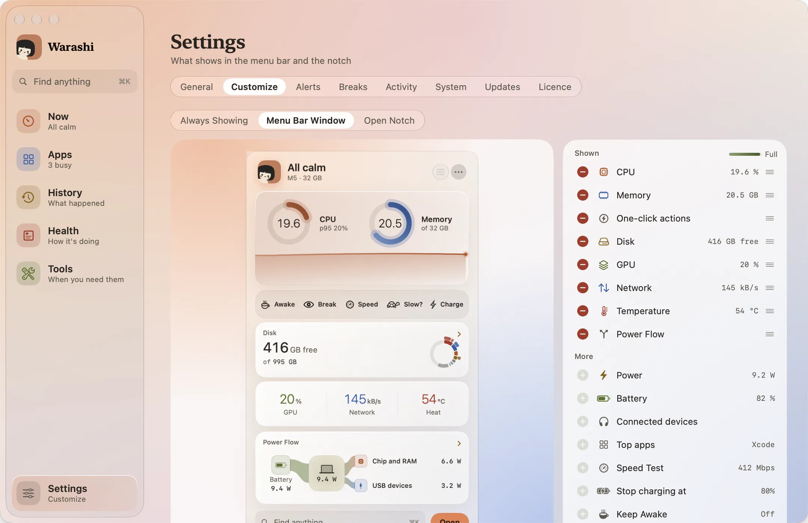

Semua yang Anda tampilkan di layar diatur di satu tempat: Pengaturan › Sesuaikan, dengan dua tab. Masing-masing menampilkan wujud aslinya, secara langsung, di samping pilihan Anda. Setiap perubahan langsung terlihat, dan tidak ada yang perlu disimpan.
- Selalu Tampil
Apa yang selalu ada di layar. Di samping si roh kecil memilih angka di bar menu Anda, atau Tidak ada, hanya si roh kecil, dan Tampilkan yang memerlukan Anda membiarkannya beralih ke peringatan. Di bawahnya, takik: Tampilkan apa yang terjadi di samping takik, pulau, dan Angka saat tidak ada yang terjadi, yang menampilkan dua angka pilihan Anda di kiri dan kanan takik (panah menukarnya).


- Jendela Bar Menu
Di sebelah kiri, jendela bar menu itu sendiri. Di bawah Ditampilkan, tekan − untuk menyingkirkan sesuatu; di bawah Lainnya, tekan + untuk menambahkannya. Ambil apa pun di pratinjau dan lepaskan di tempat yang Anda mau: yang lain bergeser memberi ruang. Meter kecil menunjukkan sisa ruang.


- Mulai lagi
Reset muncul begitu ada yang berbeda dari default, dan mengembalikan semuanya.
Pintasan ke sana
Tombol slider di bagian atas jendela bar menu membuka tab Jendela Bar Menu.
Bagaimana semuanya tertata sendiri
Jendela bar menu punya satu ukuran maksimum dan tidak pernah menggulir, jadi selalu muat di layar Anda. Saat penuh, + meredup: hapus sesuatu dulu. CPU dan memori berbagi bagian atas sebagai cincin; angka-angka pendek berjajar dalam satu baris; sisanya berpasangan dua-dua.
Takik menata dirinya sendiri: ia menampilkan apa yang sedang terjadi, yang terpenting lebih dulu. Lihat Takik & pulau.
Jika ada yang tidak beres
- Ada yang tidak ditawarkan: Baterai, Aliran Daya, dan Hentikan pengisian di hanya muncul di Mac dengan baterai, dan Tersambung hanya saat ada yang tersambung.
Selengkapnya di Pemecahan Masalah, atau kirim email ke adam@warashi.app.